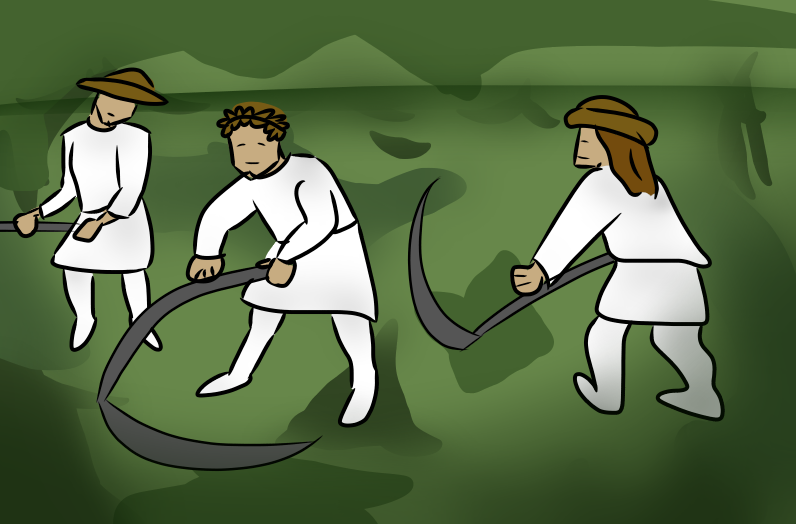

"TRANSFORMACION DE LA AGRICCULTURA":
Desde el año 1000, Europa occidental se expandió económicamente; se realizaban innovaciones en las tareas agrícolas; utilizaban hierro en las tareas agrícolas; crearon nuevas herramientas en la brasa: se usó el arado de ruedas pesadas con cuchillas y vertederos también agregaron la rasta que facilitaba la siembra; el empleo del caballo como animal de tiro. Se usaron nuevos enganches, se dejó del lado de la collera rígida y se cambió por el enganche en fila que tenía más capacidad de soporte y carga punto se usaban nuevas fuentes de energía (eólica y hidráulica), que eran aplicadas en los molinos que en su interior molía en el grano; rotulaciones: se incorporan tierras de los bosques para la explotación agrícola.

© Florencia Francés Perez, Mateo Gamarra <3.